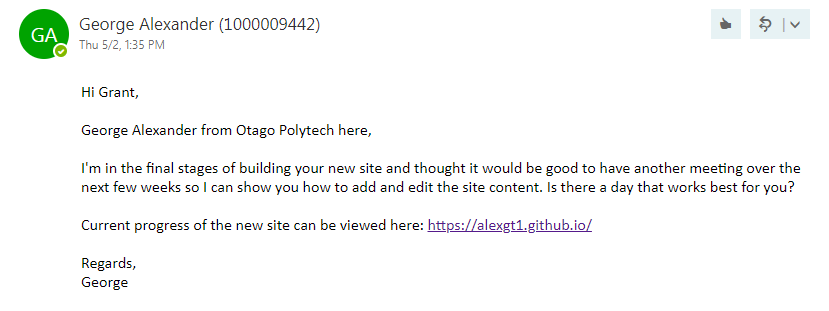
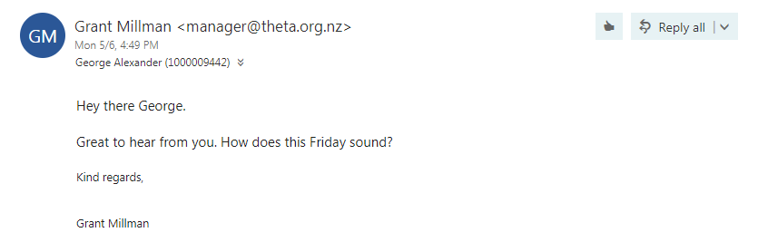
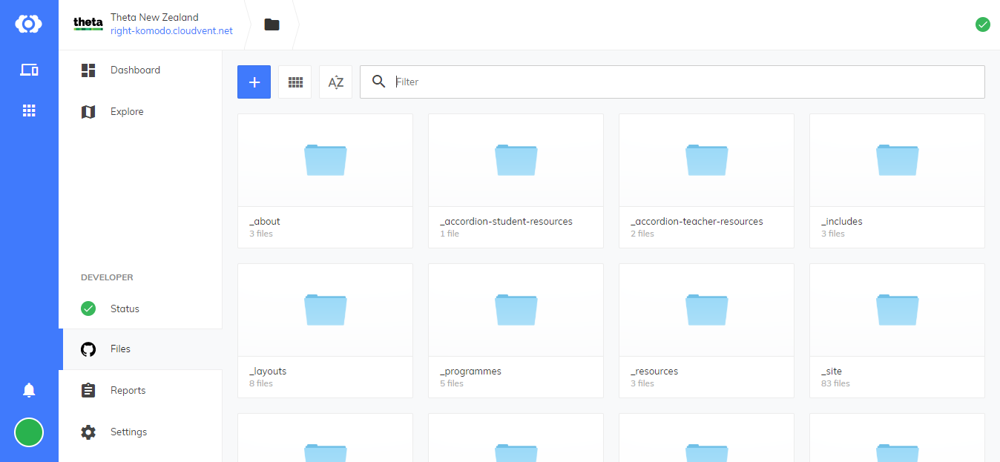

First meeting with Adon
Had my first meeting with Adon today, a non profit organisation called THETA got in contact regarding the possibility of having a website made that would cost them less to maintain than their current one.
At the moment they use an agency for all the changes they want to be made to the site which ends up costing them money for each individual change.
Adon suggested I look into building them a new site using Jekyll and hosting it for free in GitHub.
Second meeting with Grant
I got in touch with Grant to arrange a second meeting. As I had more a less finished the website I thought it would be appropriate to arrange a follow up meeting with Grant to discuss the site and any further input he might have.


It was a good chance to show him how to use the back end of the website, which was now in CloudCannon as well where to find the documentation I’d prepared for him.
Overall Grant was really pleased with the progress of the site and was stoked to no longer have to deal with the one off fees for site maintenance.
My next and possibly final task for the THETA website is finalizing the registration form. I got Grant to send me an image of what their current contact form looks like when submitted so I have something to go off.
Besides this the websites is complete.
Where to from here?
I will look to arrange a final meeting with Grant to give him and a few other members of THETA a walkthrough of how the site works as well as transfering the domain name to theta.org.nz which they currently use.
Due to time constraints I’m unsure if this meeting will happen during the remaining weeks of term or not.
Overall I have really enjoyed putting the website together and enjoyed dealing with a real life client, this will no doubt give me good experience moving forward.
Building the foundation
Today I started working on the foundations of the Theta website.
The physical appearance of their website was okay so I decided I would replicate the design instead of creating a new theme from scratch.
Using Bootstrap to create a responsive page layout.
Meeting with Grant from THETA
Had my first meeting with Grant today. It was good to be able to meet with the client to get a better understanding of the current websites situation.
Their current website has a content management system however it is very limited in functionality and only allows for the main body content to be edited. Grant has no control of the finer details such as changing the address, email or phone number and therefore has to pay more to get these updated each year.
Pictured: The current Theta website
The main take aways from the meeting were that I had to build a website that would allow for greater control over details such as these. As well as this I will have to put together some documentation for Grant as coming to terms with MarkDown in GitHub will be an adjustment from the current layout of THETA’s backend which is in SilverStripe.
Grant was happy with the current progress on the new site and was surprised at how similar the new site looked to their current one.
I briefly showed him how MarkDown worked in GitHub and he seemed to be comfortable with having to learn this once the new site was live.
Understanding Jekyll and Deploying my Server
Today I began working with Jekyll. I had used prebuilt Jekyll themes in the past for Project 1 and Software Engineering but seeing as I was building this site from the ground up I thought it would be a good idea to get a proper understanding of Jekyll and how it varies from other web technologies.
Below are a few key take aways I thought were interesting, these help to distinguish Jekyll from your basic HTML or Wordpress based sites.
What is Jekyll?
Jekyll is a static site generator. It is actively maintained and has the largest community of all the static site generators.
What is a static site generator?
A static site generator takes source files and generates an entirely static website. Static sites such as Jekyll are extremely fast as the web server only needs to return a file. This is a lot different to a wordpress site for example which has to build a whole page from scratch on every request. This is tedious and involves putting together all the template files and getting any content or data from the database. This is made worse if the site is using plugins as well.
Security
Not only are Jekyll sites fast but because there are only static files on the server there’s nothing dynamic that can be exploited. Therefore the risk of your site being hacked is greatly reduced.
Version control.
All the source code for our Jekyll site can live in a version control system such as Git. With Git we can go back to any single version of the site in its entire history, this also servers as an offsite backup, if we ever need to restore a server all of the files we need to restore are in the git repository.
Setting up my Jekyll Server
To set up Jekyll I used:
Jekyll Serve
This command built my site and created a second version in the _site directory. This allows me to run the website locally on a development server making it easy to see changes.
I found this video useful for setting up my Jekyll site
Once I had the server set up I was able to start creating my page layouts.
Page Layouts with Front Matter & Liquid
Today I added the layouts to each page, I was able to do this using front matter.
Front matter is used to set variables and metadata on Jekyll sites and is a good way to reduce code duplication across pages.
I used front matter on the home page of the website to specify the content of the page slider
---
layout: homepage
back_to_top: show
slide1_title: Seen our show?
slide1_caption:
slide1_link_text: Take our Sexwise survey
slide1_link: 'https://www.surveymonkey.com/r/97FFZJC'
slide1_image: /img/1.jpg
slide2_title: THETA promotes the development of <br/>healthy attitudes and behaviours.
slide2_caption: Enabling young people to make informed lifestyle choices.
slide2_image: /img/2.jpg
---
Creating multiple page layouts to reduce code repetition
Going off the original THETA website there were about 4 different page layouts. I built the 4 page layouts in HTML & CSS and was then able to use Jekyll to allocate the layouts to specific pages.
In the process of looking up Jekyll tutorials I stumbled across CloudCannon, who happen to be a Dunedin based Jekyll CMS. They also have an array of useful Jekyll tutorials which helped me a lot to get the site up and running.

I found this tutorial particularly useful for setting up the page layouts.
After setting up the page layouts I was able to start adding in some of the content to each page. I thought that using markdown to do so made this process a lot more straight forward as I wasn’t having to awkwardly add text in between code as I would have done if I added the text to an HTML file.
Pictured below is how the MarkDown file is structured.
The top section, known as the front matter contains page variables such as page name and description while the second section below the three dashes contains the main content of the page.
Using control flow statements
Control flow statements are a feature of liquid, similar to what you would find in php. It allows you to easily take control of what information is and isn’t displayed on a page. This is particularly useful in Jekyll if you have a collection but only want to show members of the collection that have a specific attrubute.
I used control flow statments several times in the THETA site including on the home page for the programmes slider. This section is simply an interactive display of the various programmes THETA provide to schools.
Control flow statements were useful here as the metadata varied from programme to programme. Some programmes had external link buttons to there own websites while others didn’t as shown below.

The code below indicates that I’d like to display each programme in the programmes collection.
Below I then check to see if the programme has a button title. If so then I would like to display the button link as well. If there is no button title then I won’t display a button for this programme.
The use of a control flow statement means that a button can be added further down the track for any of the other programmes while also preventing a functionless button from being displayed for the time being.
Here’s a closer look at what the front matter of a programme with a button would look like.

I found this video useful for explain how to use control flow statements
Using Collections
Collections are a useful way to organize related content in Jekyll.
The general consensus for using collections is if the things in your collection can be logically grouped and aren’t grouped by date (in this case you would use a post instead).
In total I figured out I would need close to 10 different collections of content across the website. Some of which included the about section, programme section and resource section.
I defined my collections in the _config.yml file pictured below
collections:
programmes:
output: true
resources:
output: true
about:
output: true
The items/documents within a collection live in a folder in the root of the site. This folder is named after the specific collection name. e.g. for programmes the folder name would be _programmes
The items in each folder are also written in markdown and can specify variables such as layout and title the same as any other markdown file.
By specifying output: true in _config.yml for each collection it means that Jekyll will create a page for each document.
While this isn’t neccessary for every collection it was very useful for the likes of the programme collection as these did require their own page for each programme.
Pictured: the Programmes collection. I was able to use a control flow statement to display each of the programmes in the Programmes collection in the navigation bar and open each programme in a new page when clicked.

This video from CloudCannon effectively described how to easily set up collections for your website.
Making the switch to CloudCannon
The inital plan for this project was to get the backend up and running in GitHub but having used CloudCannon tutorials religiously to get the site up and running, I was intrigued to try their content management system to see if it could be of use to Grant and other members of THETA who didn’t have the technical exprience suitable for navigating GitHub.
I set a CloudCannon account for THETA and started to sync the websites repository.
The process was seamless and CloudCannon set up the various site pages and collections in a similar way to how files would be displayed in other content management systems such as WordPress or SilverStripe. I thought this was very convenient as the THETA sites current back end was a SilverStripe CMS which meant the transition to the CloudCannon CMS would be straightforward for Grant.

File Structure
